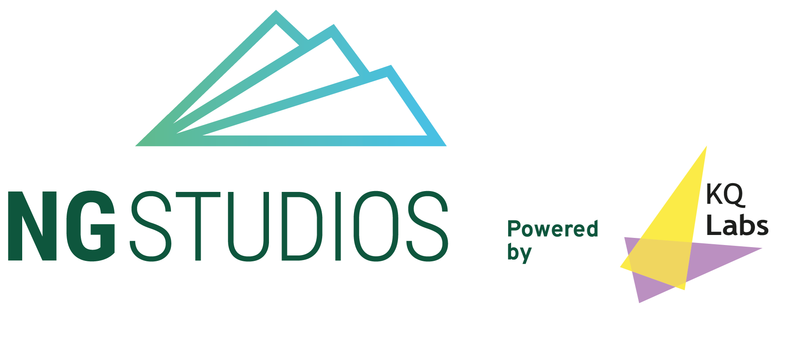
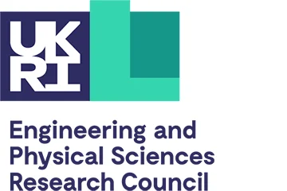

Integrated RNAbox™ prototype demonstrated
Continuous RNA synthesis, purification and lipid nanoparticle (LNP) formulation demonstrated in a compact, automated platform.
Projects, funding & support
RNA Forge advances defined RNAbox™ and service-development projects through innovation funding, strategic collaboration and investment aligned to practical technical milestones.
Development roadmap
From integrated prototype to GMP-ready deployment.
Continuous RNA synthesis, purification and lipid nanoparticle (LNP) formulation demonstrated in a compact, automated platform.
Process optimisation, analytics, soft sensors, recycling and digital control advanced across the platform.
Integrated manufacturing runs, comparability and stability studies demonstrate high-level platform performance.
GMP-aligned design, single-use components, supply-chain strategy and deployment documentation established.
Technology transfer, engineering verification and partner-facing deployment strategy prepared for commercial rollout.
Funders & programmes
From core platform innovation to company scaling, our work is backed by leading research funders, translation partners and enterprise programmes.
RNAbox™ research programmes
Research programme
SBRI: Vaccine development for potential epidemic diseases, UK Vaccine Network
Automated and digitalised RNA process-in-a-box for rapid outbreak-response RNA vaccine and therapeutic development and manufacturing.
£2 million award
1 October 2023 – 31 March 2026
Research programme
Proof-of-concept research for RNAbox™ as an automated continuous closed RNA platform for rapid outbreak-response vaccine development and manufacturing.
£3.7 million award (US$4.8 million)
1 October 2024 – 30 September 2027
RNA Forge funding & support
Spinout & translation
Mentorship & spinout support

Life-science accelerator

Founder transition
Leadership development
Investors & collaborators
RNA Forge welcomes conversations with RNA therapeutic product developers, investors, technology providers, biomanufacturing organisations and research collaborators.
Potential discussions may cover service delivery, workflow evaluation, pilot deployment, technical collaboration and company development.
Contact RNA Forge